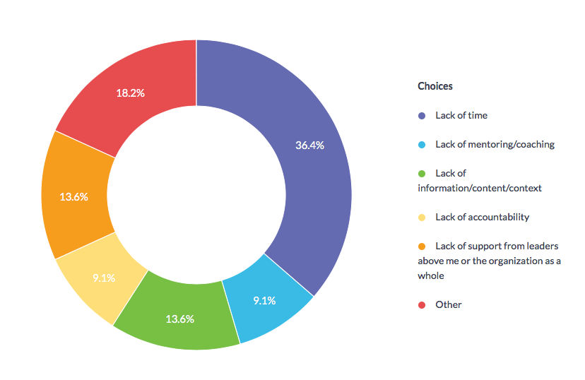

When it comes to maximizing revenue in the workplace, very often scholars and executives talks about strategy, structure, and processes. There is less or no focus on how to reduce stress and workload for employees as a way to increase productivity and maximizing revenue. For example, in the service industries, there’s always requiring overtime, high expectation and pushing a sales cultures to maximize revenue especially in busy seasons. While all these processes and strategies can help companies generate more revenue, it is also important to recognize the negative impact employees have to endures as well as the potential lost revenue that a company will insure due to stress. The American Institutes of Stress (2007) reported that the US Industries lost 300 billion dollars a year due to stress. Most of the common effects of stress are: accidents, absenteeism, employee turnover and lack productivity, as well as direct medical, legal and insurance costs to business owners.I believe with more professional development in the areas of effective leadership and communication, US Industries can decrease the amount of money that are being forfeited due to stress and at the same time maximize revenues in the long-term.
I believe with more professional development in the areas of effective leadership and communication, US Industries can decrease the amount of money that are being forfeited due to stress and at the same time maximize revenues in the long-term.
